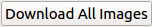
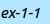

Let's make textbooks!
In this tutorial, you're going to learn everything you need to know when you make a textbook with Joytan. Before making a textbook, you should have passed everything you need in your upcoming book to Joytan following the steps of the previous tutorial.

The variety of textbooks is broad.
1. Click "Text-setting button" on the welcome page to open Text-setting window
2. If your textbook design requires some images, the easiest and fastest way to get a lot of images is to use automatic download. Click the "automatic download" button (), then Joytan searchs for images of the word or the text stored in "atop" section in Google Image and downloads the required number of images.
3. Done! Now you can create a textbook by clicking the "create" button ().
4. Joytan will immediately generate "textbook.html", which is placed under
the "joytan-sample" folder by default.
This is NOT a PDF file
which you probably want. To convert textbooks in HTML to PDF textbooks,
open the HTML textbook in your browser, then save it as PDF. For example,
on Chrome, open the "Print" dialog by using shortcut "Ctrl+P" and
change the "Destination" to "Save as PDF". Most of browsers have
shortcut "Ctrl+P" for opening "Print" dialogs and support
"Print to File" instead of using an actual printers.
Designing Textbooks
It's very easy to modify the default textbook design and even create a whole new design. Let's start designing with editing our sample designs. Designs are written in HTML, and you can open the files below with your favorite text-editors or browser consoles. Make a change in designs to meet the structure of Entry you use.
For example, if your Entry doesn't have an "ex" ( ) section, it's safe to delete the corresponding items like "ew['ex-1-1']" in your design.
Design Samples
We're developing more functional textbook designs with JavaScript.
Stay tuned!
Download sample designs as HTML from link below. (The HTML files will be rendered, but typically you can download raw HTML file using "View page source" or "Saving as..." and saving as HTML.)
[Dynamic textbook design (Default)][Matching Quizs]
[Simplest]